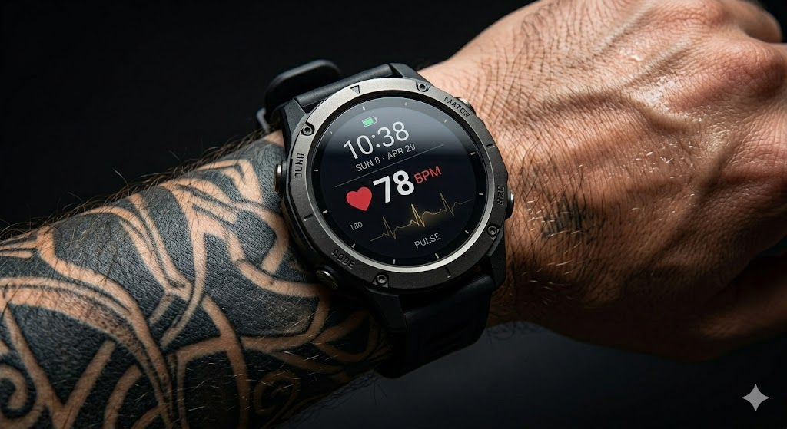

Seletor de Precisão Milimétrica
Selecione seu modelo para visualizar a especificação técnica correta.
Restaure as funções de saúde e impeça o travamento automático do seu watch em peles tatuadas com a precisão da 3N20.

Selecione seu modelo para visualizar a especificação técnica correta.
O Sensor Tattoo Fix é um insumo de alta tecnologia desenvolvido pela 3N20, ativa desde 1996. Resolvemos o problema de leitura em tatuagens com ferramentas de fabricação própria e precisão industrial.